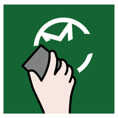

<md-toolbar>
    <div class="md-toolbar-tools">
        <span flex></span>                    
            <md-button ng-click="new()" show-gt-sm hide-sm> 
                <md-tooltip>Nuevo</md-tooltip>
                </md-icon>
            </md-button>
             <md-button ng-click="endline()" show-gt-sm hide-sm> 
                <md-tooltip>Salto línea</md-tooltip>
                    </md-icon> 
            </md-button>
            <md-button ng-click="backspace()"  show-gt-sm hide-sm> 
                <md-tooltip>Borrar</md-tooltip>
                    </md-icon>
            </md-button>
            <md-button ng-click="play()"  show-gt-sm hide-sm> 
                <md-tooltip>Reproducir</md-tooltip>
                    </md-icon>
            </md-button>
            <span flex></span>
            <md-button ng-click="export()"  show-gt-sm hide-sm> 
                <md-tooltip>Exportar</md-tooltip>
                    </md-icon>
            </md-button>
            <md-button ng-click="share()" show-gt-sm hide-sm> 
                <md-tooltip>Compartir</md-tooltip>
                    </md-icon>
            </md-button>
            <md-button ng-click="print()" show-gt-sm hide-sm> 
                <md-tooltip>Imprimir</md-tooltip>
                    </md-icon>
            </md-button>                       

            <md-button  hide-gt-sm show-sm>
                <md-tooltip>Menu</md-tooltip>
                <md-icon class="material-icons" ng-class="it.size"> menu </md-icon>
            </md-button>
    </div>
</md-toolbar>

